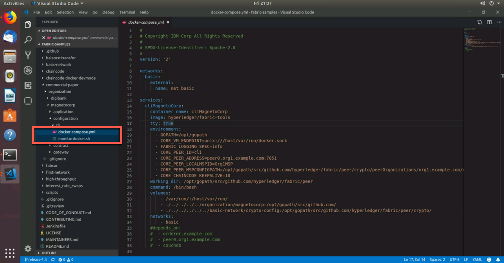
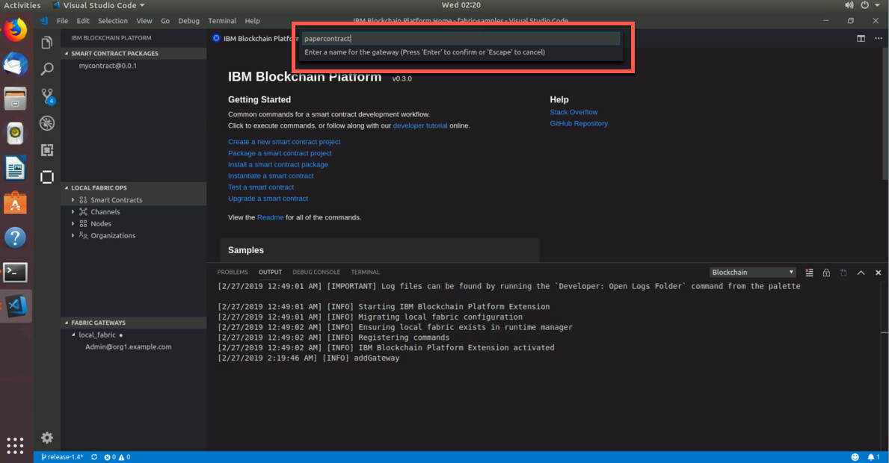

Part 2: Commercial Paper Tutorial
Section 1: Overview
This tutorial works with a sample commercial paper trading
network called PaperNet. Commercial paper is a type of unsecured lending in the
form of a "promissory note". The papers are normally issued by large
corporations to raise funds to meet short-term financial obligations at
a fixed rate of interest. Once issued at a fixed price, for a fixed
term, another company or bank will purchase them at a discount to the
face value and when the term is up, they will be redeemed for their face
value.
As an example, if a paper was issued at a face value of 10M USD for a 6-month term at 2% interest then it could be bought for 9.8M USD (10M -- 2%) by another company or bank who are happy to bear the risk that the issuer will not default. Once the term is up, then the paper could be redeemed or sold back to the issuer for its full face value of 10M USD. Between buying and redemption, the paper can be bought or sold between different parties on a commercial paper market.
These three key steps of issue, buy and redeem are the main transactions in a simplified commercial paper marketplace, which we will mirror in our lab. We will see a commercial paper issued by a company called MagnetoCorp and, once issued on the commercial paper blockchain network, another company called DigiBank will first buy the paper and then redeem it.
You'll act as a developer, end user, and administrator, within different organizations, performing various steps designed to help you understand what it's like to collaborate as two different organizations working independently, but according to mutually agreed rules in a Hyperledger Fabric network.
Below is an image of our PaperNet network. For our lab, we will create Isabella who is with MagnetoCorp. Additionally, we will create Balaji who is with DigiBank. Isabella will issue a paper for the network. The paper will have an ID number, when it was issued, the maturity date, and the face value ($). Balaji, from DigiBank, will then buy the paper and then eventually redeem it.

Below is the full breakdown of Part 2 of this lab:
-
Setting the Stage:
- Based off of Part 1, we have started a blockchain network,
created a smart contract, created and run tests and then
submitted transactions. For Part 2, we need to create a
couple more docker containers that will set us up for
success for the rest of the lab. One of these containers
will just monitor the docker network we are operating in. If
you have no idea what a docker network is, I will explain
later on. The other container contains Hyperledger Fabric
tools and is named
cliMagnetoCorp, as MagnetoCorp will use the Hyperledger Fabric command line interface (cli) within this container.
- Based off of Part 1, we have started a blockchain network,
created a smart contract, created and run tests and then
submitted transactions. For Part 2, we need to create a
couple more docker containers that will set us up for
success for the rest of the lab. One of these containers
will just monitor the docker network we are operating in. If
you have no idea what a docker network is, I will explain
later on. The other container contains Hyperledger Fabric
tools and is named
-
Install and Instantiate Smart Contract:
- Now that we have those new docker containers up and running,
we will enter our
cliMagnetoCorpcontainer and install and instantiate our smart contract. Since we are connected to the same running local Hyperledger Fabric network, we will see the smart contract show up in VSCode.
- Now that we have those new docker containers up and running,
we will enter our
-
Issue Identities:
- In this section, we will issue two identites. One is an
end-user named
IsabellawithMagnetoCorp. She will invoke a transaction that will issue a paper. Then we will issue an identity forDigiBanknamedBalaji. Balaji will act as the adminstrator for Digibank and will buy and redeem the paper that Isabella issued. Balaji is important in this lab, as we will add aFabric Gatewayconnection to connect to his perspective of the network.
- In this section, we will issue two identites. One is an
end-user named
-
Upgrade Smart Contract:
- This section is the longest of the entire lab, but it really
exemplifies the power of VSCode and the IBM Blockchain
Platform extension. We will update our smart contract code
to include one more transaction called
getPaper. This transaction will allow us to see the current status of the paper, like who knows it, what is its status and how much is it worth. In addition to modifiying the code, we will update our smart contract so that the network is aware of the new smart contract.
- This section is the longest of the entire lab, but it really
exemplifies the power of VSCode and the IBM Blockchain
Platform extension. We will update our smart contract code
to include one more transaction called
-
Submit Transactions:
- Now that we have added a transaction to our smart contract, we will then submit various transactions from many different places and perspectives. For example, we will issue a transaction from the command line interface as well as the VSCode user interface. We will also issue another paper from Isabella's perspective and then invoke a series of transactions from Balaji's perspective to buy and redeem the paper.
-
Lab Cleanup:
- This is the most bittersweet part of the entire lab. It means the lab is over and we have to clean up. If you have kids (I don't), I'd imagine their faces are sad and full of despair when you (the guardian) tell them to clean up their mess. I'd also like to imagine your face is making a similar expression right now. It's okay, more fun is going to be had soon - very soon!
Section 2: Setting the Stage
NOTE: There are two terminals we can operate in - the actual terminal application, available on your Ubuntu desktop, and the terminal window available in VSCode. Unless I explicitly say, only use the terminal application - meaning do not use the terminal in VSCode. On the chance that we will use the terminal in VSCode, I will specify that.
1. Open your terminal and navigate to your Desktop directory and then clone
the fabric-samples github repository
tecadmin@ubuntubase:~$ cd Desktop/
tecadmin@ubuntubase:~/Desktop$ ls -l
total 0
drwxr-xr-x 16 tecadmin tecadmin 512 Feb 22 12:34 mycontract
tecadmin@ubuntubase:~/Desktop$ git clone https://github.com/hyperledger/fabric-samples.git
Cloning into 'fabric-samples'...
remote: Enumerating objects: 85, done.
remote: Counting objects: 100% (85/85), done.
remote: Compressing objects: 100% (71/71), done.
remote: Total 2658 (delta 26), reused 71 (delta 13), pack-reused 2573
Receiving objects: 100% (2658/2658), 927.08 KiB | 0 bytes/s, done.
Resolving deltas: 100% (1293/1293), done.
tecadmin@ubuntubase:~/Desktop$ ls -l
total 0
drwxr-xr-x 22 tecadmin tecadmin 704 Feb 22 12:41 fabric-samples
drwxr-xr-x 16 tecadmin tecadmin 512 Feb 22 12:34 mycontract
2. We need to know the Docker network that we are currently in so that we can modify some scripts that will then create more Docker containers for us to use. Enter the command below to see all of our Docker networks
tecadmin@ubuntubase:~/Desktop$ docker network list
NETWORK ID NAME DRIVER SCOPE
ad2e1a3e2fc2 bridge bridge local
35837170ae5b fabricvscodelocalfabric_basic bridge local
c5e0411b0d34 host host local
42ffa501f2f9 none null local
3. The network we are in is called fabricvscodelocalfabric_basic
and we can verify that by doing the following command below
tecadmin@ubuntubase:~/Desktop$ docker network inspect fabricvscodelocalfabric_basic
That command will show you all the containers running in this network. In a nutshell, docker networks are natural ways to isolate containers from other containers or other networks. Having containers within a network allows them to communicate with other containers in the network.
4. Within VSCode, go to the Explorer perspective and click on File
and select Add Folder to Workplace.. - This will allow us to work from
an Untitled Workplace, but have the fabric-samples folder in there.
5. Within VSCode, navigate to the folder below within MagnetoCorp
fabric-samples -> commercial paper -> organizations -> magenetocorp -> configuration -> cli
You should see two files in there. One named docker-compose.yml and
another named monitordocker.sh

6. Within the docker-compose.yml file, replace the net_basic
with fabricvscodelocalfabric_basic on line 11 and save your file by
pressing control + s
7. Now within the monitordocker.sh file, replace
basicnetwork_basic with fabricvscodelocalfabric_basic on line 9 and
again save by pressing control + s
8. Now from the terminal navigate to the cli directory within MagnetoCorp. NOTE: scroll over to see the entire command below
tecadmin@ubuntubase:~/Desktop$ cd fabric-samples/commercial-paper/organization/magnetocorp/configuration/cli/
tecadmin@ubuntubase:~/Desktop/fabric-samples/commercial-paper/organization/magnetocorp/configuration/cli/$ ls -l
total 16
-rw-r--r-- 1 tecadmin tecadmin 1168 Feb 22 12:41 docker-compose.yml
-rwxr-xr-x 1 tecadmin tecadmin 751 Feb 22 12:44 monitordocker.sh
9. Now that we have updated these files to specify the correct Docker network, go ahead run the monitordocker.sh script with the name of our Docker network. NOTE: scroll over to see the entire command below
tecadmin@ubuntubase:~/Desktop/fabric-samples/commercial-paper/organization/magnetocorp/configuration/cli/$ ./monitordocker.sh fabricvscodelocalfabric_basic
This command will pull down another container that just monitors all of
the docker log output from the fabricvscodelocalfabric_basic network.
I'm going off a hunch, but I think that's why the file is called
monitordocker.sh. We will see more messages coming very soon.
10. Since this terminal is occupied with log messages, let's open
another terminal tab. We can open a new tab by clicking on File and
then selecting New Tab
11. When you opened a new tab, you should have been taken to the
same file path that you were in on the previous tab. Now that we have a
command line ready, go ahead and enter the command below that will
create a cliMagnetoCorp container for our docker network to use.
NOTE: scroll over to see the entire command below
tecadmin@ubuntubase:~/Desktop/fabric-samples/commercial-paper/organization/magnetocorp/configuration/cli/$ docker-compose -f docker-compose.yml up -d cliMagnetoCorp
.
. # We'll see docker messages
.
Status: Downloaded newer image for hyperledger/fabric-tools:latest
Creating cliMagnetoCorp ...
Creating cliMagnetoCorp ... done
When we first install the smart contract, we will go through the
cliMagnetoCorp container, which is our Administrator Console. This
will allow us to use Fabric peer commands. Conveniently, the
cliMagnetoCorp container is the hyperledger/fabric-tools image.

12. We can also do a docker ps -a command to see all of our docker
containers. We should see two new containers - cliMagnetoCorp and
logspout
13. Equally, we could do
docker network inspect fabricvscodelocalfabric_basic to see all of our
containers together in one network - and no, not in a blockchain
network. They are, however, the components that make up our local
blockchain network :)
Section 3: Install and Instantiate Smart Contract
Before we actually install the commercial paper smart contract, let's actually open the file to see what the smart contract is trying to do.
1. From your explorer perspective, navigate from the fabric-samples
folder to the contract folder of MagnetoCorp
fabric-samples -> commercial-paper -> organization -> magnetocorp -> contract
Within the lib folder, you'll see 3 javascript (.js) files in there.
Click on the papercontract.js file, which will open it
within VSCode

Let's dissect our papercontract.js file as it is our smart contract.
We will only go over the issue transaction, but the other transactions
follow pretty closely to this one
Below, these 2 lines of code bring into scope two key Hyperledger Fabric classes that will be used extensively by the smart contract -- Contract and Context
// Fabric smart contract classes
const { Contract, Context } = require('fabric-contract-api');
Below, we define the smart contract class CommercialPaperContract based on the built-in Fabric Contract class. The methods which implement the key transactions to issue, buy and redeem commercial paper are defined within this class
/**
* Define commercial paper smart contract by extending Fabric Contract class
*
*/
class CommercialPaperContract extends Contract {
Below, this method defines the commercial paper issue transaction for
the commercial paper blockchain network. The parameters that are passed to
this method will be used to create the new commercial paper. Locate and
examine the buy and redeem transactions within the smart contract
/**
* Issue commercial paper
*
* @param {Context} ctx the transaction context
* @param {String} issuer commercial paper issuer
* @param {Integer} paperNumber paper number for this issuer
* @param {String} issueDateTime paper issue date
* @param {String} maturityDateTime paper maturity date
* @param {Integer} faceValue face value of paper
*/
async issue(ctx, issuer, paperNumber, issueDateTime, maturityDateTime, faceValue) {
Within the issue transaction, this statement creates a new commercial paper in memory using the CommercialPaper class with the supplied transaction inputs. Examine the buy and redeem transactions to see how they similarly use this class
// create an instance of the paper
let paper = CommercialPaper.createInstance(issuer, paperNumber, issueDateTime, maturityDateTime, faceValue);
Below, this statement adds the new commercial paper to the ledger using ctx.paperList, an instance of a PaperList class that was created when the smart contract context CommercialPaperContext was initialized. Again, examine the buy and redeem methods to see how they use this class
// Add the paper to the list of all similar commercial papers in the ledger world state
await ctx.paperList.addPaper(paper);
Below you will find that this statement returns a binary buffer as response from the issue transaction for processing by the caller of the smart contract
// Must return a serialized paper to caller of smart contract
return paper.toBuffer();
2. Now that we have an understanding of the smart contract, let's actually install it on our peer through our terminal. NOTE: scroll over to see the entire command below
tecadmin@ubuntubase:~/Desktop/fabric-samples/commercial-paper/organization/magnetocorp/configuration/cli/$ docker exec cliMagnetoCorp peer chaincode install -n papercontract -v 0 -p /opt/gopath/src/github.com/contract -l node
2019-02-22 17:48:23.721 UTC [chaincodeCmd] checkChaincodeCmdParams -> INFO 001 Using default escc
2019-02-22 17:48:23.721 UTC [chaincodeCmd] checkChaincodeCmdParams -> INFO 002 Using default vscc
2019-02-22 17:48:23.862 UTC [chaincodeCmd] install -> INFO 003 Installed remotely response:<status:200 payload:"OK" >
A message saying 200 is a great sign to see.
If you notice, we are not in the contract folder of our command line
interface. Instead, we are entering the cliMagnetoCorp docker
container with docker exec cliMagnetoCorp and navigating to the
/opt/gopath/src/github.com/contract file path within our container to
grab the files we need to install the smart contract. The
-n papercontract flag names our smart contract papercontract. The
-v 0 gives our smart contract a version of 0. Finally, the -l node
tells us that the language of our smart contract is nodejs. The picture
below goes into detail, visually, as to how we are actually installing a
copy of the commercial paper smart contract on our peer.

3. Since our network is connected to our VSCode instance, you can
refresh the Local Fabric Ops panel in VSCode under the IBM Blockchain
extension. The refresh button is revealed when you hover your mouse over
the Local Fabric Ops panel

4. Since we have installed the smart contract, we should actually make it active by instantiating it. NOTE: scroll over to see the entire command below
tecadmin@ubuntubase:~/Desktop/fabric-samples/commercial-paper/organization/magnetocorp/configuration/cli/$ docker exec cliMagnetoCorp peer chaincode instantiate -n papercontract -v 0 -l node -c '{"Args":["org.papernet.commercialpaper:instantiate"]}' -C mychannel -P ""
2019-02-22 17:50:34.673 UTC [chaincodeCmd] InitCmdFactory -> INFO 001 Retrieved channel (mychannel) orderer endpoint: orderer.example.com:7050
2019-02-22 17:50:34.675 UTC [chaincodeCmd] checkChaincodeCmdParams -> INFO 002 Using default escc
2019-02-22 17:50:34.675 UTC [chaincodeCmd] checkChaincodeCmdParams -> INFO 003 Using default vscc
tecadmin@ubuntubase:~/Desktop/fabric-samples/commercial-paper/organization/magnetocorp/configuration/cli/$
As you can see in the image below, we are instantiating a copy of the
commercial paper smart contract on our MagnetoCorp peer. Similar to the
installation of the smart contract, the instantiation goes into the
cliMagnetoCorp container. After successfully instantiating the smart
contract, there will be a commercial paper smart contract docker image
and container.

5. You will know our instantiate command worked when we get
our command prompt back without any error messages. You can really verify it worked by going back
to the VSCode and refreshing the Local Fabric Ops panel and you should
see it under the instantiate section.

Section 4: Issue Identities
Now that we have a ready-to-use smart contract, let's issue some identities so that those identities can invoke and query transactions.
1. You should be within the cli folder of the MagnetoCorp folder.
You can confirm this by issuing the command below. NOTE: scroll over
to see the entire command below
tecadmin@ubuntubase:~/Desktop/fabric-samples/commercial-paper/organization/magnetocorp/configuration/cli/$ pwd
/Users/home/Desktop/fabric-samples/commercial-paper/organization/magnetocorp/configuration/cli
This is a good sign. Issue the following command below to get to the
application folder within MagnetoCorp. NOTE: scroll over to see
the entire command below
tecadmin@ubuntubase:~/Desktop/fabric-samples/commercial-paper/organization/magnetocorp/configuration/cli/$ cd ../../application/
tecadmin@ubuntubase:~/Desktop/fabric-samples/commercial-paper/organization/magnetocorp/application$
2. From the Explorer perspective within VSCode, navigate to the
same folder. That is, the application folder within MagnetoCorp. You
should see 4 files in there: .eslintrc.js, addToWallet.js, issue.js,
and package.json

3. Click on issue.js, which will open the file within VSCode.
Let's discuss what the file is trying to do.
Below we bring two key Hyperledger Fabric SDK classes into scope --
Wallet and Gateway. Because Isabella's X.509 certificate is in the
local file system, the application uses FileSystemWallet
// Bring key classes into scope, most importantly Fabric SDK network class
const { FileSystemWallet, Gateway } = require('fabric-network');
Below, this statement identifies that the application will use
Isabella's wallet when it connects to the blockchain network channel.
The application will select a particular identity within Isabella's
wallet. (The wallet must have been loaded with Isabella's X.509
certificate -- that's what addToWallet.js does.)
// A wallet stores a collection of identities for use
const wallet = new FileSystemWallet('../identity/user/isabella/wallet');
This line of code, below, connects to the network using the gateway
identified by connectionProfile, using the identity referred to in
ConnectionOptions. See how ../gateway/networkConnection.yaml and
User1@org1.example.com are used for these values respectively
// Connect to gateway using application specified parameters
await gateway.connect(connectionProfile, connectionOptions);
Below in the couple lines of code, the application connects to the
network channel mychannel, where the papercontract was previously
instantiated. If you had a different channel name, you would have to
modify this line of code
// Access commercial paper network
const network = await gateway.getNetwork('mychannel');
Below, this statement gives the application addressability to the smart contract defined by the namespace org.papernet.commercialpaper within papercontract. Once an application has issued getContract, it can submit any transaction implemented within it
// Get addressability to commercial paper contract
const contract = await network.getContract('papercontract', 'org.papernet.comm...');
Below, these lines of code submit a transaction to the network using
the issue transaction defined within the smart contract.
MagnetoCorp, 00001 are the values to be used by the issue transaction
to create a new commercial paper
// issue commercial paper
const issueResponse = await contract.submitTransaction('issue','MagnetoCorp', '00001', '2020-05-31', '2020-11-30','5000000');
This statement, below, processes the response from the issue
transaction. The response needs to be deserialized from a buffer into
paper, a CommercialPaper object which can be interpreted correctly by
the application
// process response let paper =
CommercialPaper.fromBuffer(issueResponse);
4. Since we know our issue.js file is looking at the
../gateway/networkConnection.yaml, we need to modify this file to
represent our connection profile. We can do this by opening the
networkConnection.yaml file in VSCode and then modifying the ports of
our Orderer (line 91), Peer (line 105) and CA (117). You can find these
ports by doing the following command from your terminal application.
NOTE: scroll over to see the entire command below
tecadmin@ubuntubase:~/Desktop/fabric-samples/commercial-paper/organization/magnetocorp/application$ docker ps -a
Once you have modified the file, please save it (control + s).

5. Enter the following command to install the needed packages
from the package.json file. NOTE: scroll over to see the entire
command below
tecadmin@ubuntubase:~/Desktop/fabric-samples/commercial-paper/organization/magnetocorp/application$ npm install
.
. # A bunch of output, with some of the output repeating
.
node-pre-gyp WARN Using request for node-pre-gyp https download
[grpc] Success: "/home/tecadmin/Desktop/fabric-samples/commercial-paper/organization/magnetocorp/application/node_modules/grpc/src/node/extension_binary/node-v57-darwin-x64-unknown/grpc_node.node" is installed via remote
npm notice created a lockfile as package-lock.json. You should commit this file.
npm WARN nodejs@1.0.0 No description
npm WARN nodejs@1.0.0 No repository field.
added 318 packages in 36.994s
6. Since we are in our command line, let's issue the following command that will create Isabella. NOTE: scroll over to see the entire command below
tecadmin@ubuntubase:~/Desktop/fabric-samples/commercial-paper/organization/magnetocorp/application$ node addToWallet.js
done
7. We will know it worked if we can execute the following command successfully. NOTE: scroll over to see the entire command below
tecadmin@ubuntubase:~/Desktop/fabric-samples/commercial-paper/organization/magnetocorp/application$ ls -l ../identity/user/isabella/wallet/
total 0
drwxr-xr-x 5 tecadmin tecadmin 160 Feb 22 12:53 User1@org1.example.com
tecadmin@ubuntubase:~/Desktop/fabric-samples/commercial-paper/organization/magnetocorp/application$ ls -l ../identity/user/isabella/wallet/User1@org1.example.com/
total 24
-rw-r--r-- 1 tecadmin tecadmin 1037 Feb 22 12:53 User1@org1.example.com
-rw-r--r-- 1 tecadmin tecadmin 246 Feb 22 12:53 c75bd6911aca808941c3557ee7c97e90f3952e379497dc55eb903f31b50abc83-priv
-rw-r--r-- 1 tecadmin tecadmin 182 Feb 22 12:53 c75bd6911aca808941c3557ee7c97e90f3952e379497dc55eb903f31b50abc83-pub
Keys are vital to understanding how transactions and identity work within a blockchain network. Below is a break down of the keys and certificate used in this example
- a private key
c75bd6911a...-privused to sign transactions on Isabella's behalf, but not distributed outside of her immediate control - a public key
c75bd6911a...-pubwhich is cryptographically linked to Isabella's private key. This public key is contained within Isabella's X.509 certificate - a certificate
User1@org.example.comwhich contains Isabella's public key and other X.509 attributes added by the Certificate Authority at certificate creation. This certificate is distributed to the network so that different actors at different times can cryptographically verify information signed by Isabella's private key
8. Now that we have Isabella from MagnetoCorp, let's perform the issue transaction from our terminal. NOTE: scroll over to see the entire command below
tecadmin@ubuntubase:~/Desktop/fabric-samples/commercial-paper/organization/magnetocorp/application$ node issue.js
Connect to Fabric gateway.
Use network channel: mychannel.
Use org.papernet.commercialpaper smart contract.
Submit commercial paper issue transaction.
2019-02-22T17:55:20.631Z - info: [TransactionEventHandler]: _strategySuccess: strategy success for transaction "f8e124886d6cb84434cb6a996f4889145c0541199c88bab7d4d85ae41266e51e"
Process issue transaction response.
MagnetoCorp commercial paper : 00001 successfully issued for value 5000000
Transaction complete.
Disconnect from Fabric gateway.
Issue program complete.
This successfully committed a transaction to the ledger. See how it outputted a transaction hash for us.
As you can see in the image below, we are using the certificate belonging to Isabella to submit our paper issue transaction. Once we verify that Isabella can submit a transaction (via her certificate), the gateway allows the application to focus on transaction generation, submission and response. It coordinates the transaction proposal, ordering and notification processing between the different network components.

9. Since we have created an identity for MagnetoCorp, let's also
create Balaji from DigiBank. To do so, we will need a third command line
tab. We can add another command line tab by clicking on
File -> New Tab. This will create a new tab in the terminal from the
exact folder directory we were in from our second command line tab. This
third tab will act as DigiBank.
10. We now need to switch to a new directory, specifically the application folder of DigiBank. NOTE: scroll over to see the entire command below
tecadmin@ubuntubase:~/Desktop/fabric-samples/commercial-paper/organization/magnetocorp/application$ cd ../../digibank/application/
tecadmin@ubuntubase:~/Desktop/fabric-samples/commercial-paper/organization/digibank/application$
11. Navigate to the application folder of DigiBank in the editior perspective in VSCode
fabric-samples -> commercial paper -> organization -> digibank -> application
You should see 5 files here:
.eslintrc.js, addtowallet.js, buy.js, redeem.js and package.json
12. Go ahead and click on buy.js and scroll through the file. You
will notice on line 40 that it is looking at the
../gateway/networkConnection.yaml file.
We need to modify the networkConnection.yaml file to represent our
network - very similar to step 4 of this section.
13. We need to modify the ports of our Orderer (line 91), Peer (line
105) and CA (117). We can find these ports by doing the following
command from our terminal. If you are confused as to where to modify
your port numbers, look at the picture on step 4 to get a sense as to
where we are grabbing our ports from. NOTE: scroll over to see the
entire command below
tecadmin@ubuntubase:~/Desktop/fabric-samples/commercial-paper/organization/digibank/application$ docker ps -a
Once we have modified the file, please save it (control + s). NOTE: If you don't do this step, the rest of the lab will not work.
14. Back in our terminal and using our DigiBank tab, we can run
the next command to install some required packages. NOTE: You will
have to scroll over to see the entire command below
tecadmin@ubuntubase:~/Desktop/fabric-samples/commercial-paper/organization/digibank/application$ npm install
.
.
.
node-pre-gyp WARN Using request for node-pre-gyp https download
[grpc] Success: "/home/tecadmin/Desktop/fabric-samples/commercial-paper/organization/digibank/application/node_modules/grpc/src/node/extension_binary/node-v57-darwin-x64-unknown/grpc_node.node" is installed via remote
npm notice created a lockfile as package-lock.json. You should commit this file.
npm WARN nodejs@1.0.0 No description
npm WARN nodejs@1.0.0 No repository field.
added 318 packages in 27.138s
15. Now, let's add Balaji from DigiBank. NOTE: scroll over
to see the entire command below
tecadmin@ubuntubase:~/Desktop/fabric-samples/commercial-paper/organization/digibank/application$ node addToWallet.js
done
16. We can confirm that we actually created an identity by viewing its public/private key below. NOTE: scroll over to see the entire command
tecadmin@ubuntubase:~/Desktop/fabric-samples/commercial-paper/organization/digibank/application$ ls -l ../identity/user/balaji/wallet/
total 0
drwxr-xr-x 5 tecadmin tecadmin 160 Feb 22 12:57 Admin@org1.example.com
tecadmin@ubuntubase:~/Desktop/fabric-samples/commercial-paper/organization/digibank/application$ ls -l ../identity/user/balaji/wallet/Admin@org1.example.com/
total 24
-rw-r--r-- 1 tecadmin tecadmin 1033 Feb 22 12:57 Admin@org1.example.com
-rw-r--r-- 1 tecadmin tecadmin 246 Feb 22 12:57 cd96d5260ad4757551ed4a5a991e62130f8008a0bf996e4e4b84cd097a747fec-priv
-rw-r--r-- 1 tecadmin tecadmin 182 Feb 22 12:57 cd96d5260ad4757551ed4a5a991e62130f8008a0bf996e4e4b84cd097a747fec-pub
In the next section, we will actually upgrade our smart contract before submitting transactions. We are upgrading our smart contract in order to add in a query to get the status of our paper.
Based on the picture below, we now have 2 participants in this network. Obviously, this is MagnetoCorp (Isabella) and DigiBank (Balaji). Both participants are allowed to interact with the commercial paper blockchain network through their application.

Section 5: Upgrade Smart Contract
1. From our Explorer perspective, navigate to the contract/lib
folder of DigiBank
fabric-samples -> commercial-paper -> organization -> digibank -> contract -> lib
2. Within the papercontract.js file, scroll down to line number
54 and enter the following lines of code below
/**
* Get commercial paper
* @param {Context} ctx the transaction context
* @param {String} issuer commercial paper issuer
* @param {Integer} paperNumber paper number for this issuer
*/
async getPaper(ctx, issuer, paperNumber) {
try {
console.log("getPaper for: " + issuer + " " + paperNumber);
let paperKey = CommercialPaper.makeKey([issuer, paperNumber]);
let paper = await ctx.paperList.getPaper(paperKey);
return paper.toBuffer();
} catch(e) {
throw new Error('Paper does not exist' + issuer + paperNumber);
}
}
3. From the terminal in our digibank tab, add a file below that
will execute the query that we just added to our smart contract. NOTE:
there are multiple steps in this command and you will have to scroll over to see the entire series of commands below
tecadmin@ubuntubase:~/Desktop/fabric-samples/commercial-paper/organization/digibank/application$ touch getPaper.js
tecadmin@ubuntubase:~/Desktop/fabric-samples/commercial-paper/organization/digibank/application$ vi getPaper.js
---
type the letter "i" to go into insert mode and paste in the following lines of code below
---
/*
SPDX-License-Identifier: Apache-2.0
*/
/*
* This application has 6 basic steps:
* 1. Select an identity from a wallet
* 2. Connect to network gateway
* 3. Access PaperNet network
* 4. Construct request to issue commercial paper
* 5. Submit transaction
* 6. Process response
*/
'use strict';
// Bring key classes into scope, most importantly Fabric SDK network class
const fs = require('fs');
const yaml = require('js-yaml');
const { FileSystemWallet, Gateway } = require('fabric-network');
const CommercialPaper = require('../contract/lib/paper.js');
// A wallet stores a collection of identities for use
//const wallet = new FileSystemWallet('../../../connection-local-fabric');
const wallet = new FileSystemWallet('../identity/user/balaji/wallet');
// Main program function
async function main() {
// A gateway defines the peers used to access Fabric networks
const gateway = new Gateway();
// Main try/catch block
try {
// Specify userName for network access
// const userName = 'isabella.issuer@magnetocorp.com';
const userName = 'Admin@org1.example.com';
// Load connection profile; will be used to locate a gateway
let connectionProfile = yaml.safeLoad(fs.readFileSync('../gateway/networkConnection.yaml', 'utf8'));
// Set connection options; identity and wallet
let connectionOptions = {
identity: userName,
wallet: wallet,
discovery: { enabled: false, asLocalhost: true }
};
// Connect to gateway using application specified parameters
console.log('Connect to Fabric gateway.');
await gateway.connect(connectionProfile, connectionOptions);
// Access PaperNet network
console.log('Use network channel: mychannel.');
const network = await gateway.getNetwork('mychannel');
// Get addressability to commercial paper contract
console.log('Use org.papernet.commercialpaper smart contract.');
const contract = await network.getContract('papercontract', 'org.papernet.commercialpaper');
// get commercial paper
console.log('Submit commercial paper getPaper transaction.');
const getPaperResponse = await contract.evaluateTransaction('getPaper', 'MagnetoCorp', '00001');
// process response
console.log('Process getPaper transaction response.');
let paper = CommercialPaper.fromBuffer(getPaperResponse);
let paperState = "Unknown";
if (paper.isIssued()) {
paperState = "ISSUED";
} else if (paper.isTrading()) {
paperState = "TRADING";
} else if (paper.isRedeemed()) {
paperState = "REDEEMED";
}
console.log(` +--------- Paper Retrieved ---------+ `);
console.log(` | Paper number: "${paper.paperNumber}"`);
console.log(` | Paper is owned by: "${paper.owner}"`);
console.log(` | Paper is currently: "${paperState}"`);
console.log(` | Paper face value: "${paper.faceValue}"`);
console.log(` | Paper is issued by: "${paper.issuer}"`);
console.log(` | Paper issue on: "${paper.issueDateTime}"`);
console.log(` | Paper matures on: "${paper.maturityDateTime}"`);
console.log(` +-----------------------------------+ `);
console.log('Transaction complete.');
} catch (error) {
console.log(`Error processing transaction. ${error}`);
console.log(error.stack);
} finally {
// Disconnect from the gateway
console.log('Disconnect from Fabric gateway.')
gateway.disconnect();
}
}
main().then(() => {
console.log('getPaper program complete.');
}).catch((e) => {
console.log('getPaper program exception.');
console.log(e);
console.log(e.stack);
process.exit(-1);
});
---
To get out of vi, hit the "ESC" button. Then type in ":wq" and then press enter to save the file
Who knew you would learn vi in a VSCode lab! Send your hate mail to
austin@dontsendhatemail.com :)
4. We now have a new file (getPaper.js) that calls the getPaper transactionj
that we have added to our
papercontract.js smart contract. This doesn't mean we can execute a
getPaper query quite yet because, if you remember, we have to install and
instantiate this update onto our peer. Then - and only then - can we
actually submit the getPaper query. The next few steps will walk us
through how to do that.
It would be helpful to understand what we just added to our
soon-to-be-updated smart contract. The getPaper query is being
submitted by Balaji from DigiBank and it allows him to get the
current status of the paper within the network. For example, it prints
out the paper's identification number, the paper's cost, the paper's state
(trading, redeemed, issued), the paper's issue date and a few other key
details. Read on for a further breakdown of the query.
Below, this statement brings two key Hyperledger Fabric SDK classes into
scope -- Wallet and Gateway. Because Balaji’s X.509 certificate is in
the local file system, the application uses FileSystemWallet
// Bring key classes into scope, most importantly Fabric SDK network class
const { FileSystemWallet, Gateway } = require('fabric-network');
Below, this statement identifies that the application will use
Balaji's wallet when it connects to the blockchain network channel.
The application will select a particular identity within Balaji's
wallet. (The wallet must have been loaded with Balaji's X.509
certificate -- that's what addToWallet.js does.)
// A wallet stores a collection of identities for use
const wallet = new FileSystemWallet('../identity/user/balaji/wallet');
Below, this line of code connects to the network using the gateway
identified by connectionProfile, using the identity referred to in
connectionOptions. See how ../gateway/networkConnection.yaml and
Admin@org1.example.com are used for these values respectively
// Connect to gateway using application specified parameters
await gateway.connect(connectionProfile, connectionOptions);
Below, this connects the application to the network channel mychannel, where the papercontract was previously instantiated. If you had a different channel name, you would have to modify this line of code
// Access commercial paper network
const network = await gateway.getNetwork('mychannel');
Below, this statement gives the application addressability to the smart contract defined by the namespace org.papernet.commercialpaper within papercontract. Once an application has issued getContract, it can submit any transaction/query implemented within it
// Get addressability to commercial paper contract
const contract = await network.getContract('papercontract','org.papernet.commercialpaper');
This series of log output is what the query prints out for us. Based on
the defined variables in the papercontract.js we are able to query for
pretty specific bits of data to get an overview of our paper. You can
look above and see how we are grabbing our paperState
console.log(` +--------- Paper Retrieved ---------+ `);
console.log(` | Paper number: "${paper.paperNumber}"`);
console.log(` | Paper is owned by: "${paper.owner}"`);
console.log(` | Paper is currently: "${paperState}"`);
console.log(` | Paper face value: "${paper.faceValue}"`);
console.log(` | Paper is issued by: "${paper.issuer}"`);
console.log(` | Paper issue on: "${paper.issueDateTime}"`);
console.log(` | Paper matures on: "${paper.maturityDateTime}"`);
console.log(` +-----------------------------------+ `);
console.log('Transaction complete.');
Below, this part of the code looks at the
let paper = CommercialPaper.fromBuffer(getPaperResponse); message and
then defines what the current status of the paper is. There are 4
options, UNKNOWN, ISSUED, TRADING, and REDEEMED
let paper = CommercialPaper.fromBuffer(getPaperResponse);
let paperState = "Unknown";
if (paper.isIssued()) {
paperState = "ISSUED";
} else if (paper.isTrading()) {
paperState = "TRADING";
} else if (paper.isRedeemed()) {
paperState = "REDEEMED";
}
Below, this chunk of code simply disconnects from the gateway. No matter if our query was successful or if there was an error, we'll be disconnected from the gateway
// Disconnect from the gateway
console.log('Disconnect from Fabric gateway.')
gateway.disconnect();
5. In order to upgrade our smart contract, we need to add a fabric
gateway using our IBM Blockchain extension. To do that, switch back to the
IBM Blockchain extension within VSCode and click on the gear icon in the
bottom left. Then, click on Command Palette

6 To add a Fabric Gateway, type this, below, in the search bar of our list of commands to execute
>IBM Blockchain Platform: Add Gateway
Fabric gateways are ways for us to connect to a blockchain network from
the perspective of a particular user. In this case, we are acting as Balaji from DigiBank
in this commercial paper network. If there were more actors, you could
envision more gateways being incorportated here
7. For the name of the gateway, enter papercontract

8. When it asks for a file path to a connection profile, select
Browse
9. Then navigate to the networkConnection.yaml file within
Digibank to grab the connection profile

10. It will then ask us if we would like to use an existing wallet
or create a new wallet. We want to choose
Use an existing wallet on my file system
11. When it asks for a file path to a wallet directory, select
Browse
12. Then, we will navigate to the wallet of Balaji, our user. Click
on Select once you have clicked and highlighted on wallet

13. We will then see a new Fabric Gateway within the IBM Blockchain
extension as well as successful messages from the output

14. We can then click on Admin@org1.example.com and then it will
show all of our channels. Furthermore, it will show all the smart
contracts available on the channel. You'll see we have
mycontract@0.0.1 and papercontract@0. Even further, we can see all
the available transactions/queries based on the smart contract. All of
these are available if we untoggle the channels and smart contracts.
Even though we have added the new fabric gateway, we still haven't
updated our smart contract to include the getPaper query. We will do
that in the next series of commands.
15. Switch back to the Explorer perspective and toggle the
fabric-samples to hide all of the folders and files. Then click on
File and select Add Folder to Workplace to add a new folder to the
workspace
16. Once it gives us a pop-up of the folder directory, navigate to
the contract folder of Digibank. Click on or highlight the
contract folder
fabric-samples -> commercial-paper -> organization -> digibank -> contract

17. Here we will name the smart contract papercontract and give it
version 0.0.2. First, untoggle the contract folder and click on the
package.json file to open it. Within that file, change lines 2 and 3
to look like this below
"name": "papercontract",
"version": "0.0.2",

18. Switch back to the IBM Blockchain extension. From there click on
the gear in the bottom left and select Command Palette. When the
search bar of available commands appears, type in the following below
>IBM Blockchain Platform: Package a Smart Contract Project

22. When it asks for a workplace folder to package choose
contract. Then it will pull in the folder and name it
papercontract@0.0.2 based on our modifications to the package.json
file
23. Now that we have our packaged smart contract, let's upgrade our
current smart contract. To do so, within the Local Fabric Ops pane,
untoggle the Channels and right click on mychannel. Then select
Upgrade Smart Contract

24. It will then ask which current smart contract we want to
upgrade. We want to select papercontract@0 to upgrade. Then it will
ask which smart contract version to preform an upgrade with, we want
to select papercontract@0.0.2. Since we have to install our upgraded
contract on a peer, select peer0.org1.example.com to install the smart
contract on. When it asks for any arguments, do not enter anything here,
but simply press enter to execute our upgrade. You will know
this was successful if we click on Admin@org1.example.com under the
papercontract gateway. Then untoggle the papercontract@0.0.2
smart contract to see all the available transactions and queries.

We have successfully upgraded our smart contract to include the
getPaper query. Now let's have some fun and make some transactions and
queries!
Section 6: Submit Transactions
1. If you remember, we already did an issue transaction back before
upgrading our smart contract. Since we have added the getPaper query
to our smart contract, let's do that from the digibank perspective
using getPaper.js. As you already know, the getPaper query will get
the current status of the paper on top of other bits of information,
like price.
2. From the digibank perspective in your terminal (your 3rd
terminal) enter this command. NOTE: scroll over to see the entire
command below
tecadmin@ubuntubase:~/Desktop/fabric-samples/commercial-paper/organization/digibank/application$ node getPaper.js
Connect to Fabric gateway.
Use network channel: mychannel.
Use org.papernet.commercialpaper smart contract.
Submit commercial paper getPaper transaction.
Process getPaper transaction response.
+--------- Paper Retrieved ---------+
| Paper number: "00001"
| Paper is owned by: "MagnetoCorp"
| Paper is currently: "ISSUED"
| Paper face value: "5000000"
| Paper is issued by: "MagnetoCorp"
| Paper issue on: "2020-05-31"
| Paper matures on: "2020-11-30"
+-----------------------------------+
Transaction complete.
Disconnect from Fabric gateway.
getPaper program complete.
3. Now that we know the status of our paper, let's actually buy the paper. NOTE: scroll over to see the entire command below
tecadmin@ubuntubase:~/Desktop/fabric-samples/commercial-paper/organization/digibank/application$ node buy.js
Connect to Fabric gateway.
Use network channel: mychannel.
Use org.papernet.commercialpaper smart contract.
Submit commercial paper buy transaction.
2019-02-28T19:52:17.372Z - info: [TransactionEventHandler]: _strategySuccess: strategy success for transaction "871e7743c58e406575d4e553330faae3711c0a65a2f677b6e6d398650069d81a"
Process buy transaction response.
MagnetoCorp commercial paper : 00001 successfully purchased by DigiBank
Transaction complete.
Disconnect from Fabric gateway.
Buy program complete.
4. Let's observe the current status of the paper. NOTE: scroll over to see the entire command below
tecadmin@ubuntubase:~/Desktop/fabric-samples/commercial-paper/organization/digibank/application$ node getPaper.js
Connect to Fabric gateway.
Use network channel: mychannel.
Use org.papernet.commercialpaper smart contract.
Submit commercial paper getPaper transaction.
Process getPaper transaction response.
+--------- Paper Retrieved ---------+
| Paper number: "00001"
| Paper is owned by: "DigiBank"
| Paper is currently: "TRADING"
| Paper face value: "5000000"
| Paper is issued by: "MagnetoCorp"
| Paper issue on: "2020-05-31"
| Paper matures on: "2020-11-30"
+-----------------------------------+
Transaction complete.
Disconnect from Fabric gateway.
getPaper program complete.
5. Let's pretend the maturity date has been reached so that we can now redeem this paper. Let's do that now. NOTE: scroll over to see the entire command below
tecadmin@ubuntubase:~/Desktop/fabric-samples/commercial-paper/organization/digibank/application$ node redeem.js
Connect to Fabric gateway.
Use network channel: mychannel.
Use org.papernet.commercialpaper smart contract.
Submit commercial paper redeem transaction.
2019-02-28T19:52:46.452Z - info: [TransactionEventHandler]: _strategySuccess: strategy success for transaction "c26ecbf1077d99a5ea025c339ffabd88eb22cf4e6ac5ff8d9b570cd6c38eb531"
Process redeem transaction response.
MagnetoCorp commercial paper : 00001 successfully redeemed with MagnetoCorp
Transaction complete.
Disconnect from Fabric gateway.
Redeem program complete.
6. Once again, let's get the status of the paper. NOTE: scroll over to see the entire command below
tecadmin@ubuntubase:~/Desktop/fabric-samples/commercial-paper/organization/digibank/application$ node getPaper.js
Connect to Fabric gateway.
Use network channel: mychannel.
Use org.papernet.commercialpaper smart contract.
Submit commercial paper getPaper transaction.
Process getPaper transaction response.
+--------- Paper Retrieved ---------+
| Paper number: "00001"
| Paper is owned by: "MagnetoCorp"
| Paper is currently: "REDEEMED"
| Paper face value: "5000000"
| Paper is issued by: "MagnetoCorp"
| Paper issue on: "2020-05-31"
| Paper matures on: "2020-11-30"
+-----------------------------------+
Transaction complete.
Disconnect from Fabric gateway.
getPaper program complete.
7. We have successfully run a few transactions and queries with 1
paper and all from our terminal. Now, let's make a 2nd paper and mix up
the method of how we do the transactions and queries. To do this, go
back to VSCode and into the Explorer perspective. From there, navigate
to the issue.js file within MagnetoCorp
fabric-samples -> commercial-paper -> organization -> magnetocorp -> application -> issue.js
8. On what should be line 68, change the issue transaction code to
what is below. NOTE: scroll over to see the line of code change
below
Take this..
const issueResponse = await contract.submitTransaction('issue', 'MagnetoCorp', '00001', '2020-05-31', '2020-11-30', '5000000');
..and change to
const issueResponse = await contract.submitTransaction('issue', 'MagnetoCorp', '00002', '2019-06-31', '2019-12-30', '6000000');
That line of code is creating a new paper. Go ahead and save this file (control + s).
9. Now navigate to the getPaper.js file within digibank and
change the key below to look for a paper with an id of 00002 on line
68
fabric-samples -> commercial-paper -> organization -> digibank -> application -> getPaper.js
---
Take this..
const getPaperResponse = await contract.evaluateTransaction('getPaper', 'MagnetoCorp', '00001');
.. and change to
const getPaperResponse = await contract.evaluateTransaction('getPaper', 'MagnetoCorp', '00002');
That line of code is changing the getPaper.js file to look for the
paper with an ID of 00002. Go ahead and save this file (control +
s).
10. Now that we have modified our code, let's go ahead and issue a
new paper from our terminal. To do this, we have to be in our
MagnetoCorp perspective (our 2nd terminal tab). Within that command
line, enter this. NOTE: scroll over to see the entire command below
tecadmin@ubuntubase:~/Desktop/fabric-samples/commercial-paper/organization/magnetocorp/application$ node issue.js
Connect to Fabric gateway.
Use network channel: mychannel.
Use org.papernet.commercialpaper smart contract.
Submit commercial paper issue transaction.
2019-02-28T19:54:09.436Z - info: [TransactionEventHandler]: _strategySuccess: strategy success for transaction "bec2e62e6c440d214cd61336fd3b38a1024e590afa58c5f90421e6db19cc410c"
Process issue transaction response.
MagnetoCorp commercial paper : 00002 successfully issued for value 6000000
Transaction complete.
Disconnect from Fabric gateway.
Issue program complete.
11. Now, switch to Digibank's perspective in our terminal (our 3rd
terminal tab) and do a getPaper query using getPaper.js. NOTE:
scroll over to see the entire command below
tecadmin@ubuntubase:~/Desktop/fabric-samples/commercial-paper/organization/digibank/application$ node getPaper.js
Connect to Fabric gateway.
Use network channel: mychannel.
Use org.papernet.commercialpaper smart contract.
Submit commercial paper getPaper transaction.
Process getPaper transaction response.
+--------- Paper Retrieved ---------+
| Paper number: "00002"
| Paper is owned by: "MagnetoCorp"
| Paper is currently: "ISSUED"
| Paper face value: "6000000"
| Paper is issued by: "MagnetoCorp"
| Paper issue on: "2019-06-31"
| Paper matures on: "2019-12-30"
+-----------------------------------+
Transaction complete.
Disconnect from Fabric gateway.
getPaper program complete.
12. That's enough command line for right now- let's jump to VSCode
and buy our new paper there. Within the IBM Blockchain extension, go to
the Fabric Gateway and click on the papercontect gateway. From
there, click on Admin@org1.example.com and untoggle to the
transactions and query. Then, right click on the buy transaction and
select Submit Transaction

When it asks for some arguments to pass in with the buy transaction, enter this below
MagnetoCorp,00002,MagnetoCorp,DigiBank,5900000,2019-07-31
13. We will see that transaction was successful from the output it
generated in VSCode. We can confirm that by doing a getPaper.js query
again in our terminal (3rd terminal tab). NOTE: scroll over to see
the entire command below
tecadmin@ubuntubase:~/Desktop/fabric-samples/commercial-paper/organization/digibank/application$ node getPaper.js
Connect to Fabric gateway.
Use network channel: mychannel.
Use org.papernet.commercialpaper smart contract.
Submit commercial paper getPaper transaction.
Process getPaper transaction response.
+--------- Paper Retrieved ---------+
| Paper number: "00002"
| Paper is owned by: "DigiBank"
| Paper is currently: "TRADING"
| Paper face value: "6000000"
| Paper is issued by: "MagnetoCorp"
| Paper issue on: "2019-06-31"
| Paper matures on: "2019-12-30"
+-----------------------------------+
Transaction complete.
Disconnect from Fabric gateway.
getPaper program complete.
14. We are going to repeat the previous 2 steps, but this time we
are going to do a redeem transaction from the IBM Blockchain extension.
To do this, go to the Fabric Gateway pane and click on the
papercontract gateway. From there, click on Admin@org1.example.com
and untoggle to the transactions and query. Then, right click on
redeem and select Submit Transaction

When it asks for some arguments to pass to the transaction, enter this below :
MagnetoCorp,00002,DigiBank,2019-12-30
15. What do you think the next action will be? If you're thinking
the getPaper query, you were right. NOTE: scroll over to see the
entire command below
tecadmin@ubuntubase:~/Desktop/fabric-samples/commercial-paper/organization/digibank/application$ node getPaper.js
Connect to Fabric gateway.
Use network channel: mychannel.
Use org.papernet.commercialpaper smart contract.
Submit commercial paper getPaper transaction.
Process getPaper transaction response.
+--------- Paper Retrieved ---------+
| Paper number: "00002"
| Paper is owned by: "MagnetoCorp"
| Paper is currently: "REDEEMED"
| Paper face value: "6000000"
| Paper is issued by: "MagnetoCorp"
| Paper issue on: "2019-06-31"
| Paper matures on: "2019-12-30"
+-----------------------------------+
Transaction complete.
Disconnect from Fabric gateway.
getPaper program complete.
Feel free to continue to make and trade more papers by submitting various transactions and queries. If you do not want to make more papers, please continue to last section, which will simply clean up the lab environment.
Section 7: Lab Cleanup
1. To clean up the lab environment, please enter this in your terminal below
docker stop $(docker ps -q) # to stop all of your running docker containers
docker rm $(docker ps -aq) # to remove all of your docker containers
docker rmi -f $(docker images -q) # to remove all of your docker images
2. Finally, go back to your Explorer perspective and right click
on each of your folders and select Remove Folder from Workplace for each one. This
will get rid of all of your folders from your Explorer perspective, but don't worry
as those folders are not deleted from your file system!
END OF LAB!